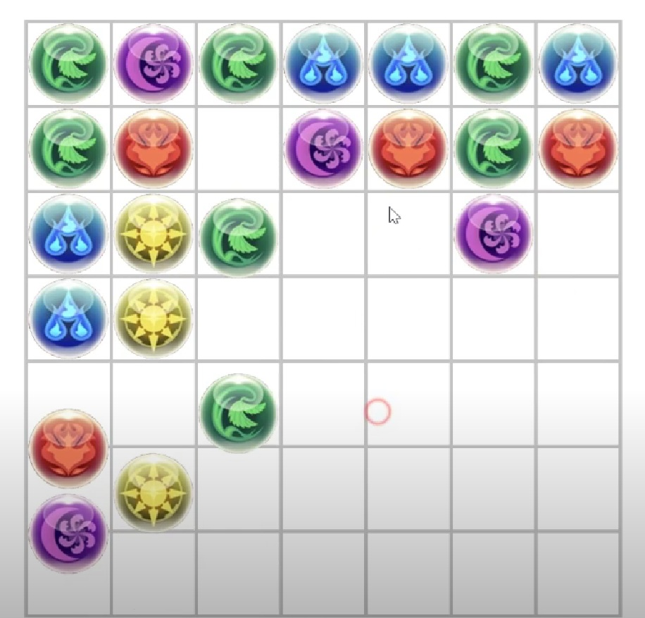
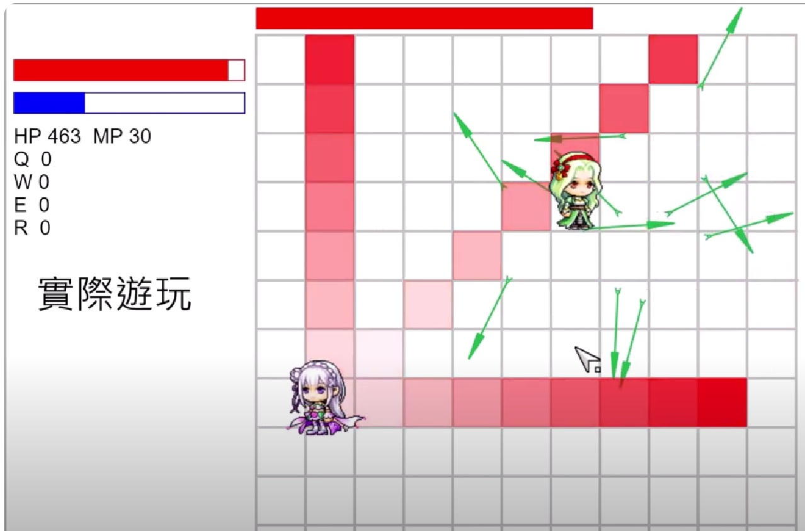

自我介紹
稱呼
柏任
網站
https://max9503310104.github.io
(本網站)
興趣
- 程式設計、遊戲製作、遊戲引擎實作、電腦圖學
課餘時間寫點小程式，做做遊戲。
小時候都用現成的遊戲引擎，最近終於開始做自己的遊戲程式框架。
- 電腦科技與藝術
對電腦和科技滿熟悉的。
遊戲又稱第九藝術。為了做遊戲，還需要學電腦繪圖、3D 建模、作曲、混音等等，這些技能還在慢慢摸索中。
- 學日語
看 ACG 久了就會，也買了一堆日語教科書來學。
- 演奏樂器
會吹口琴，在大學社團練的。以後還想學別的樂器。
作品
- Arcaea 分數計算機
近期用 C++ 寫的，算是程式框架比較完整的作品。
可搜尋歌曲，按名稱、曲包、難度來篩選。
可編輯分數，計算成績，按成績排序。
工具介面及使用範例
- 試做東方
近期用 python 寫的作品。
敵人有三種攻擊，有血條。
彈幕展示
- 試做 Muse Dash
以前實作在 FPGA 上的作品，素材出自 Muse Dash。
用鍵盤操控角色，打下方、上方、同時上下方的音符。有分數統計。
(左) 角色與音符展示，(右) 同時打上下音符
- 試做三消加 2048 玩法
以前的作品，素材出自龍族拼圖。
可上下左右移動珠子。

(左) 向上移動珠子中，(右) 消除珠子後
- 試做平面動作遊戲
以前的作品，素材出自楓之谷。
用滑鼠移動角色，鍵盤攻擊。角色有血條和魔力條。敵人有自主行動和攻擊邏輯。

(左) 角色、敵人和敵人的攻擊，(右) 角色招式展示
- 試做楓之谷
以前的作品，素材出自楓之谷。
用鍵盤操控角色。有跳躍、攀繩功能。
 (左) 敵人攻擊，(右) 角色攻擊
(左) 敵人攻擊，(右) 角色攻擊
坑
- 音樂遊戲：Arcaea、世界計畫、osu
主玩 Arcaea，玩了5年。在這之前玩的是 osu。
今年開始玩世界計畫，應該早點玩的。
- 單機遊戲：Hollow Knight、Ori and the Blind Forest、Dark Souls 3、Elden Ring
喜歡 2D 動作冒險遊戲，或像黑暗靈魂那樣的奇幻世界。
- 線上遊戲：楓之谷、CSO、原神
小時候玩一堆 Nexon 出的遊戲。
原神剛推出時很驚豔，但要一直跟限時活動，沒什麼時間玩了。
- Vocaloid
喜歡聽歌搭配 2D MV 或 3D 模型舞蹈。
推薦：ハッピーシンセサイザ、Electric Angel、神のまにまに、Beyond the way、劣等上等
- 東方 Project
主要聽同人創作歌曲。
- 動畫
《吹響吧！上低音號》 對樂器、音樂和社團的描述相當仔細。我還認真考慮以後去學長笛。
《白箱》 科普動畫製作流程，可引發人對動畫幕後的興趣。
《Fate/stay night》 魔法和世界觀太酷了。
《刀使巫女》 冷門原創動畫，演出日本刀和刀術流派的戰鬥很帥。
《Lapis Re:Lights》 有唱歌跳舞表演，又有魔法，完全符合胃口。
還有其他動畫待補充...